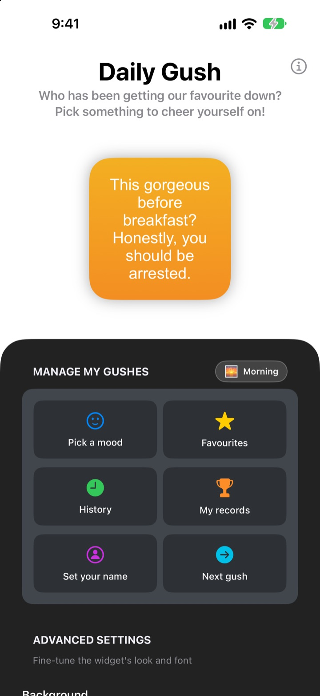
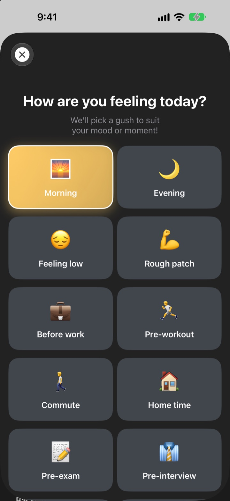
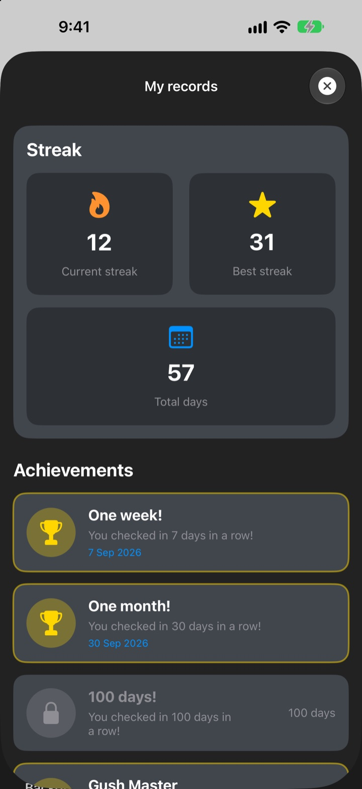

每次拿起手機，
都有頭號粉絲在等你
今日彩虹屁是一個誇你誇得有點過頭的小工具。早上來句早安稱讚，面試前來句面試打氣。字型、顏色和背景都能照自己喜歡的來。
一次購買，所有功能都能用。沒有訂閱，也沒有廣告。

先收下一句稱讚
選一個心情，小工具上就會出現那個心情的稱讚。點「下一句」，會從281句裡隨機抽一句。
對你最嚴格的人，會不會就是你自己？
上班路上、面試之前、下班路上，腦袋裡全是自我挑剔。今日彩虹屁一天好幾次在主畫面上挺你，誇得有點誇張。忍不住笑出來的那一刻，自信也回來了一些。
照此刻的心情來一句
從 早上、上班路上、心累時、面試前、約會前 等14種心情和情境挑一個，對應的稱讚馬上出現在小工具上。選不出來？還有 隨機。

喜歡的句子都能留下來
點星星就能加入我的最愛，看過的句子在歷史紀錄裡都找得到。點 就用這句，它就直接放上小工具。

天天來看，紀錄越積越多
每天都來看一眼，連續紀錄就會一直往上加。連續7天、30天、100天，或累計50天、100天，都會解鎖成就。

三個步驟就能開始
- 1
選個心情
打開
選擇心情，點最符合現在的那一個。 - 2
打扮小工具
在進階設定裡挑字型、文字顏色、背景和更新頻率。
- 3
放到主畫面
長按主畫面，點 + ，找到今日彩虹屁加入即可。
小工具可以這樣改
- 字型
- Futura、Georgia、Marker Felt 等13種
- 文字顏色
- 想要什麼顏色都可以
- 背景
- 雙色漸層，或 App 內建的背景圖片
- 對齊
- 靠左、置中、靠右
- 行距
- 把行距調寬或調窄
- 更新頻率
- 每5、15或30分鐘換一句
小工具的大小在加入主畫面時選擇。
買一次就夠了
App 本體
- 14種心情，281句稱讚
- 可自訂的主畫面小工具
- 我的最愛和歷史紀錄
- 連續紀錄和成就
支持開發者
- 小、中、大三種小費任選
- 不會解鎖任何功能，只是表達謝意的地方
想給的時候再給就好。
沒有訂閱、沒有額外付費，也沒有廣告。
常見問題
怎麼加入小工具？
長按主畫面空白處進入編輯模式，點上方的 + ，搜尋今日彩虹屁，選好大小加入即可。
下一句是怎麼決定的？
選好心情後，那個心情的稱讚會馬上出現在小工具上。之後，小工具會依你選的更新頻率，從281句裡隨機顯示。也可以在 App 裡點 下一句 自己換。
可以改小工具的字型或更新頻率嗎？
可以。在進階設定裡能改字型、文字顏色、背景、對齊方式、行距和更新頻率。更新頻率可選5分鐘、15分鐘或30分鐘。
小工具沒有馬上變。
小工具什麼時候重畫是由 iOS 決定的，有時會比你選的頻率晚一點。打開 App 再關掉，小工具就會馬上更新。
連續紀錄怎麼算？
每天都來看一句，連續紀錄就加一天。在 我的紀錄 裡能看到目前連續天數、最高紀錄、累計天數和成就。
我的最愛和紀錄不見了。
所有資料只存在裝置裡，刪除 App 或換手機後不會帶過去。如果沒有刪除 App 卻不見了，請寄信告訴我們。
我的資料會被傳到別的地方嗎？
不會。App 不收集任何個人資料，我的最愛和紀錄都只在你的裝置裡。
想回報問題或提出建議？
可以直接在 App 的 聯絡開發者 傳送，也可以寄信或透過 Instagram 私訊（@lee25_ios）聯絡。看到後會盡快回覆。
有任何問題或建議，歡迎來信 leeo@kakao.com。